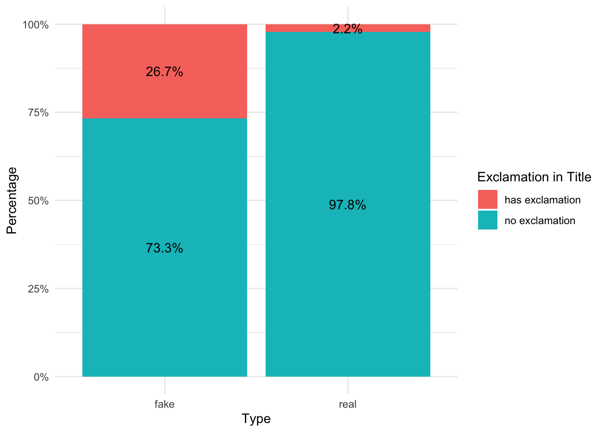
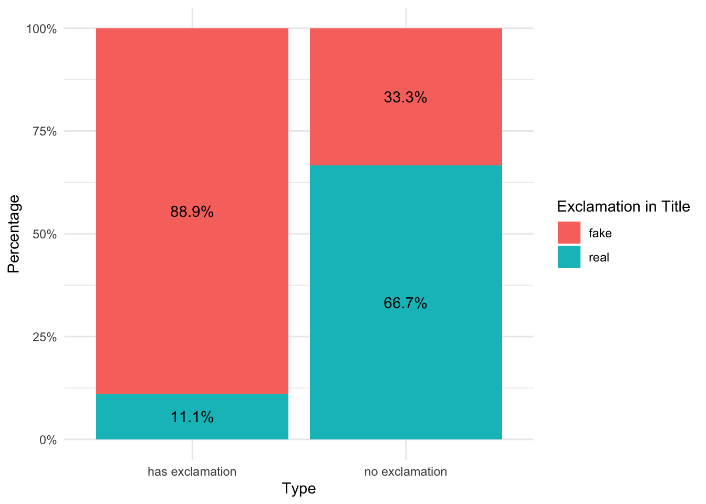

library(bayesrules)
library(tidyverse)
library(janitor)
library(scales)Fake vs True News
Import data with bayesrules package
data(fake_news)Bring up dataset documentation
?fake_newsColumns of Interest
1) type
- Binary variable indicating whether the article presents fake or real news(fake, real)
unique(fake_news$type)[1] fake real
Levels: fake real2) title_has_excl
unique(fake_news$title_has_excl)[1] FALSE TRUEBinary variable indicating whether the title of the article includes an exlamation point or not(TRUE, FALSE)
We will change the values to be “no exclamation, has exlamation”
fake_news <- fake_news %>%
mutate(title_has_excl = ifelse(title_has_excl, "has exclamation", "no exclamation"))Bayes Theorem
\[ P(B \mid A) = \frac{P(B) L(B \mid A)}{P(A)} \]
A <- Has exclamation point
- Ac <- Does not have exclamation point
B <- Article is fake
- Bc <- Article is real
P(B)
fake_news %>%
tabyl(type) type n percent
fake 60 0.4
real 90 0.6As a first step in our Bayesian analysis, we’ll formalize our prior understanding of whether the new article is fake. Based on our fake_news data, which we’ll assume is a fairly representative sample, we determined earlier that 40% of articles are fake and 60% are real. That is, before even reading the new article, there’s a 0.4 prior probability that it’s fake and a 0.6 prior probability it’s not. We can represent this information using mathematical notation. Letting B denote the event that an article is fake and Bc (read “B complement” or “B not”) denote the event that it’s not fake, we have
P(B)=0.40 and P(Bc)=0.60.
prior_probability_fake <- 0.40L(B|A) = P(A|B)
L(B|A) (the likelihood of B given A) is the same as P(A∣B) the probability of observing A given B.
- The probability of observing an exclamation point in the title given the article is fake
fake_news %>%
tabyl(type, title_has_excl) %>%
adorn_percentages("row") type has exclamation no exclamation
fake 0.26666667 0.7333333
real 0.02222222 0.9777778Why did we adorn_percentages by row instead of column?
We want the percentages for each article type (fake vs real) to sum to 100% opposed to the percentages for each title_has_excl (has exclamation vs no exclamation) to sum to 100%
The probability of observing an exclamation point in the title given the article is fake
The “given that the article is fake” allows us to zoom in on the articles that are fake and see the percentage that have an exclamation point vs don’t have an exclamation point
- See the stacked bar chart below
# Step 1: Create a tabyl table and calculate percentages
fake_news_percent <- fake_news %>%
tabyl(type, title_has_excl) %>%
adorn_percentages("row")
# Step 2: Convert the wide format into a long format
fake_news_long <- fake_news_percent %>%
pivot_longer(cols = -type, names_to = "title_has_excl", values_to = "percentage")
# Step 3: Create the bar plot with percentages
ggplot(fake_news_long, aes(x = type, y = percentage, fill = title_has_excl)) +
geom_bar(stat = "identity", position = "fill") +
geom_text(aes(label = percent(percentage, accuracy = 0.1)),
position = position_fill(vjust = 0.5)) +
scale_y_continuous(labels = percent_format()) +
labs(y = "Percentage", x = "Type", fill = "Exclamation in Title") +
theme_minimal()
likelihood_fake_article_has_exl <- 0.267P(A)
fake_news %>%
tabyl(title_has_excl) title_has_excl n percent
has exclamation 18 0.12
no exclamation 132 0.88The prior probability that an article has an exclamation point is 0.12
prior_probability_title_has_excl <- 0.12P(B|A)
\[ P(B \mid A) = \frac{P(B) L(B \mid A)}{P(A)} \]
(prior_probability_fake * likelihood_fake_article_has_exl) / prior_probability_title_has_excl[1] 0.89The prior probability that an article is fake given that the title has an exclamation point is 0.89
- Since our article uses exclamation points, we can zoom in on the 12% of articles that fall into the A row. Among these articles, proportionally 88.9% (0.1067 / 0.12) are fake and 11.1% (0.0133 / 0.12) are real. Though it might feel anti-climactic, this is the answer we were seeking: there’s an 88.9% posterior chance that this latest article is fake.
# Step 1: Create a tabyl table and calculate percentages
title_has_excl_percent <- fake_news %>%
tabyl(type, title_has_excl) %>%
adorn_percentages("col")
# Step 2: Convert the wide format into a long format
title_has_excl_long <- title_has_excl_percent %>%
pivot_longer(cols = -type, names_to = "title_has_excl", values_to = "percentage")
# Step 3: Create the bar plot with percentages
ggplot(title_has_excl_long, aes(x = title_has_excl, y = percentage, fill = type)) +
geom_bar(stat = "identity", position = "fill") +
geom_text(aes(label = percent(percentage, accuracy = 0.1)),
position = position_fill(vjust = 0.5)) +
scale_y_continuous(labels = percent_format()) +
labs(y = "Percentage", x = "Type", fill = "Exclamation in Title") +
theme_minimal()